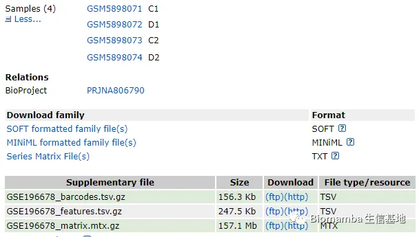
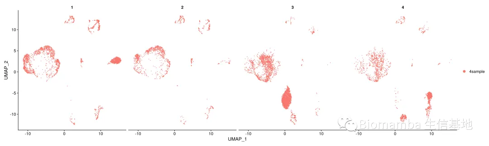

答读者问（二十）四个单细胞样本只给了一套文件怎么读
原文：https://mp.weixin.qq.com/s?__biz=MzAwMzIzOTk5OQ==&mid=2247494879&idx=1&sn=c2287ab3684792747dfac53d6704462b&chksm=9b3c958fac4b1c994a4b075c4f8475816e121966fa8c52cb0a2ce8c14987988ab9bdb49bdf69#rd 合集：单细胞教程全收录 / 答读者问
问题
有一位同学遇到了一个稍微有些奇怪的数据，明明有四个样本的GSE数据集，但是补充文件里只给了一套Seurat的输入文件，那这应该如何分析呢。

怎么解决问题
其实这个问题我们以前也真的更过，如果你看过下面两篇内容，那你应该能做一些探索并解决上列问题：答读者问 （十四）Seurat中分类变量处理技巧 没有barcode文件的单细胞数据要怎么读取
其实这个问题我们以前也真的更过，如果你看过下面两篇内容，那你应该能做一些探索并解决上列问题：
答读者问 （十四）Seurat中分类变量处理技巧 没有barcode文件的单细胞数据要怎么读取
1.读取并创建数据
按作者的意思（原文：https://rmdopen.bmj.com/content/8/2/e002314）这个数据集中共包含以下几种细胞：T (11151), B (990), NK (5155), NKT (7538) and dendritic cells (DCs; 124), monocytes and macrophages (557), bone-related cells (864): ECs (246), mesenchymal stem cells (MSCs; 104) and OBs (360).我们读一下看看细胞数对不对。
library(Seurat)
library(dplyr)
feature <- read.table(gzfile('GSE196678_features.tsv.gz'))
head(feature)
## V1 V2 V3 V4
## 1 ENSG00000243485 MIR1302-2HG Gene Expression
## 2 ENSG00000237613 FAM138A Gene Expression
## 3 ENSG00000186092 OR4F5 Gene Expression
## 4 ENSG00000238009 AL627309.1 Gene Expression
## 5 ENSG00000239945 AL627309.3 Gene Expression
## 6 ENSG00000241599 AL627309.4 Gene Expression
cellname <- read.table(gzfile('GSE196678_barcodes.tsv.gz'),
header = F,sep = '\t')[,1] %>% as.vector()
length(cellname)
#这么看这个细胞数应该没问题，确实是一套文件里装了四个样本
## [1] 31090
cellname[1:5]
## [1] "AAACCCAAGACCTTTG-1" "AAACCCAAGCCGCACT-1" "AAACCCAGTACGGCAA-1"
## [4] "AAACCCAGTGGATTTC-1" "AAACCCAGTTTACTTC-1"
library(Matrix)
mymatrix <- readMM(gzfile('GSE196678_matrix.mtx.gz'))
mymatrix <- as(mymatrix,'dgCMatrix')
colnames(mymatrix) <- cellname
rownames(mymatrix) <- feature$V2
scRNA <- CreateSeuratObject(counts = mymatrix,
project = "4sample", min.cells = 3, min.features = 200)
## Warning: Non-unique features (rownames) present in the input matrix, making
## unique
2.获取样本信息
浅看一下barcode，我觉得可能碱基后面的那个数字是样本名称，尝试一下：
sample.num <- lapply(colnames(scRNA), function(x){strsplit(x,'-')[[1]][2]}) %>% unlist() %>% as.character()
unique(sample.num)#没错，正好四个样本，那加到注释里即可
## [1] "1" "2" "3" "4"
names(sample.num) <- colnames(scRNA)
scRNA[['sample.num']] <- sample.num
unique(scRNA$sample.num)
## [1] "1" "2" "3" "4"
3.走一下Seurat的标准流程
scRNA[["percent.mt"]] <- PercentageFeatureSet(scRNA, pattern = "^MT-")
scRNA <- subset(scRNA, subset = nFeature_RNA > 200 & nFeature_RNA < 2500 & percent.mt < 5)#质控参数我随便写的，大家想复写可以看一下原文
scRNA <- NormalizeData(scRNA, normalization.method = "LogNormalize", scale.factor = 10000)
scRNA <- FindVariableFeatures(scRNA, selection.method = "vst", nfeatures = 2000)
scRNA <- ScaleData(scRNA, features = rownames(scRNA))
## Centering and scaling data matrix
scRNA <- ScaleData(scRNA, vars.to.regress = "percent.mt") #剔除不想要的变量（如线粒体的比例）
## Regressing out percent.mt
## Centering and scaling data matrix
scRNA <- RunPCA(scRNA, features = VariableFeatures(object = scRNA)) #PCA降维分析
print(scRNA[["pca"]], dims = 1:5, nfeatures = 5) #打印PCA部分结果
## PC_ 1
## Positive: NKG7, CD52, GZMH, PRF1, CTSW
## Negative: SELENOP, MARCKS, CTSL, CXCL2, IER3
## PC_ 2
## Positive: C1QA, MS4A7, C1QC, FOLR2, C1QB
## Negative: DCN, CALD1, CDH11, LUM, MGP
## PC_ 3
## Positive: FABP4, IFI27, RBP7, TM4SF1, GNG11
## Negative: LRP1, BMP5, ESM1, PDGFRA, CDH11
## PC_ 4
## Positive: NRP1, CD36, CTSW, HIST1H4C, RNASE1
## Negative: HSPA1A, IGKC, IGHM, HSPE1, G0S2
## PC_ 5
## Positive: MT2A, MT1X, MT1E, HSP90AA1, MT1F
## Negative: IGLC2, IGKC, JCHAIN, CD79A, HLA-DRA
scRNA <- FindNeighbors(scRNA, dims = 1:15)
## Computing nearest neighbor graph
## Computing SNN
scRNA <- RunUMAP(scRNA, dims = 1:10) #运行UMAP算法
## Warning: The default method for RunUMAP has changed from calling Python UMAP via reticulate to the R-native UWOT using the cosine metric
## To use Python UMAP via reticulate, set umap.method to 'umap-learn' and metric to 'correlation'
## This message will be shown once per session
## 07:22:13 UMAP embedding parameters a = 0.9922 b = 1.112
## 07:22:13 Read 9081 rows and found 10 numeric columns
## 07:22:13 Using Annoy for neighbor search, n_neighbors = 30
## 07:22:13 Building Annoy index with metric = cosine, n_trees = 50
## 0% 10 20 30 40 50 60 70 80 90 100%
## [----|----|----|----|----|----|----|----|----|----|
## **************************************************|
## 07:22:15 Writing NN index file to temp file /tmp/Rtmp3n3qRr/filecf28a733092aa
## 07:22:15 Searching Annoy index using 1 thread, search_k = 3000
## 07:22:18 Annoy recall = 100%
## 07:22:19 Commencing smooth kNN distance calibration using 1 thread
## 07:22:20 Initializing from normalized Laplacian + noise
## 07:22:20 Commencing optimization for 500 epochs, with 366466 positive edges
## 07:22:34 Optimization finished
DimPlot(scRNA,split.by = 'sample.num')

值得注意的是，虽然我们按规律把样本给拆分出来了，但是这四个样本是否按顺序对应GEO中的GSM样本，这就未必了。所以最稳的办法还是按顺序下载各个GSM样本的原始数据，然后走cellranger：
单细胞分析的最上游——处理Fastq文件：cellranger
测试文件与代码
这个数据从GEO下起来特别卡，我给大家存百度网盘里了。不要再说我的链接失效啦，我也不知道为啥腾讯和百度云不对付，微信页面或腾讯浏览器时常打不开百度云链接，链接最好在谷歌浏览器中打开或扫码打开 ，真的失效了再提醒客服更换链接哦。也不要说我的链接里没代码，html格式的文件大家用浏览器打开就可以看到整理好的笔记。
链接: https://pan.baidu.com/s/1UpkWyuoOHGHwVrQR1Om-9A?pwd=ggk7
若链接失效可以文末联系客服领取~
往期回顾
答读者问（十一）如何一次性读取一个目录下的cellranger输出文件？
答读者问（十二）ERROR: have no zero exit status
答读者问（十三）查看Seurat对象时的ERROR：type='text'
答读者问（十五）稀疏矩阵转matrix, as.matrix函数是下下策
答读者问（十九）R语言内存问题-Error: cannot allocate vector of size ** Gb

如何联系我们
 公众号后台消息更新不及时，超过48h便不允许回复读者消息，这里给大家留一下领取资料、免费服务器的微信号 ，方便各位随时交流、提建议（由助理接待）。此外呼声一直很高的交流群 也建好了，欢迎大家入群讨论：永久免费的千人生信、科研交流群
公众号后台消息更新不及时，超过48h便不允许回复读者消息，这里给大家留一下领取资料、免费服务器的微信号 ，方便各位随时交流、提建议（由助理接待）。此外呼声一直很高的交流群 也建好了，欢迎大家入群讨论：永久免费的千人生信、科研交流群
大家可以阅读完这几篇之后添加给生信入门初学者的小贴士 如何搜索公众号过往发布内容

 您点的每个赞和在看，我都认真当成了喜欢
您点的每个赞和在看，我都认真当成了喜欢